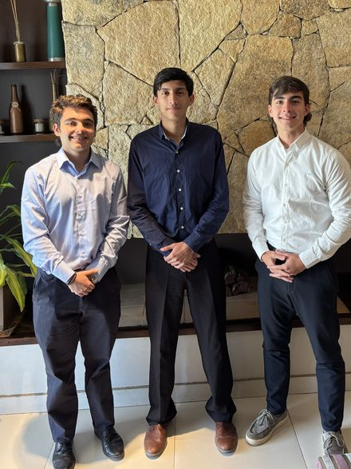
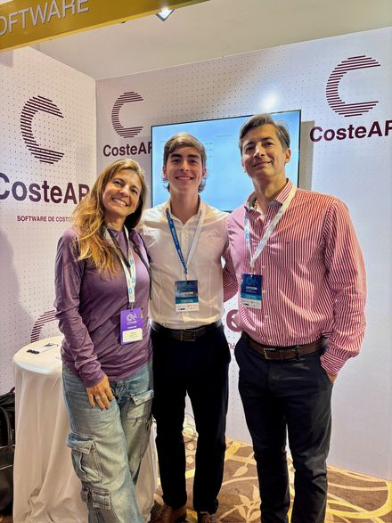

Cofundador
Costear
En toda PyME hay plata enterrada en números que nadie mira bien: costos mal medidos, desvíos sin explicar, decisiones tomadas a ciegas. El estándar sigue siendo Excel —dinámico, sí, pero manual, lento y frágil—.
Seguir leyendo
Costear le dice a una empresa cuánto le cuesta realmente cada unidad que produce y vende, con trazabilidad total: cada número sabe de dónde viene. No reemplaza al profesional; el costista y el contador son los protagonistas, y la IA es el copiloto. Es específico por rubro, no un ERP genérico.
Nació en Emprende U, un programa de emprendedorismo universitario, donde llegamos a semifinal con mención especial. Desde entonces tuvimos stand propio en EXPOCON y el proyecto salió en La Gaceta.
El recorrido
-

Emprende U. Semifinal y mención especial.
-

EXPOCON. Stand propio. Mis viejos vinieron a ver en qué andaba.